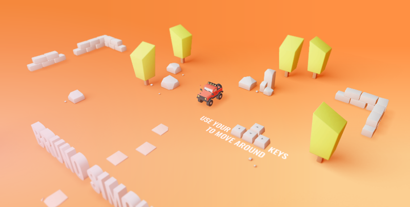
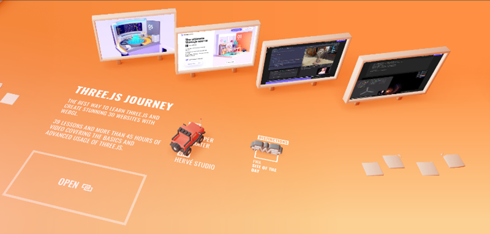

Imagining the Internet
Week 1 (12/02 - 16/02)
Readings done: "As we may Think", "What is Hypertext" & "The Library of Babel".
Having randomly read both articles "As we may Think" and "What is Hypertext?" from this week's list of readings, I found myself rather stuck and confused about what I was learning from these passages.
I found both of them to not really make much sense to me. Upon reading "What is Hypertext?" and finding that I genuinely could not answer that question after reading the article, I googled that very
question. I learnt that the simple answer to that question is that hypertext is a system that allows extensive cross-referencing between related sections of text and graphic material [1]. I zoned in
on the words 'extensive cross-referencing' and realised that that's the essence of the internet. A world of various information all somehow linked to each other. This being a computing term relating
to how a word shown in any text can be researched further outside of its initial context, is the epitome of the internet. Delving deeper and deeper into nooks and crannies of terms, phrases, and words
you didn't know existed until you looked. This view of mine closely relates to the ideas presented in "The Library of Babel". The article speaks about an arbitrary library filled to the brim with all
kinds of books that contain different kinds of information and stories. This is exactly what imagining the internet would be like. Multiple layers of research (each book) embedded into one idea
(a bookshelf), that you can read at any given time to provide whatever knowledge and opportunities you may lack. Its so interesting to take a modern technological idea and compare it to an average day
thing... although, I suppose that both of these things (the internet and a library), are part of average day things nowadays. All the above ideas mentioned is actually quite relatable. I'm sure, just
like me, you've spent what you thought was a few seconds researching something on the internet for work/school, only to find an hour later that you're watching a bizarre video on YouTube about the
30 deadliest insects in the world, which had no relation to what you were researching.The internet is definitely a cool place and can often have you in the wrong place at the wrong time but be weary...
getting lost in there isn't always a good thing.
Something you may find quite funny and ironic is the creation of this very web page I'm working on. Just like the readings, I found myself delving into the ideas of using GitHub and coding in html quite
weird. I had never wanted to fight with software before until this week. GitHub had me very confused and how it worked in conjunction to Visual studio was so strange, delightfully... when I eventually got
the hang of it. I have to thank my friend Suhail for being patient with me and showing me how to use all these systems and software. Having been out of touch with coding and GitHub for about a year or so,
I was very fascinated by a lot and also worried I wouldn't get the hang of it. Hopefully, moving forward will be much easier and to you who are reading these blogs will be doing so on a great web page.
Looking into other web developer portfolios, I found it so very fascinating how each developer found unique ways to display themselves, their achievements, and so on, on their website. The different
styles and aesthetics definitely gave me a bunch of ideas for when we get around to designing our website. I had a look at Bruno Simon's website [2] which was absolutely breathtaking. His website is
essentially 3 dimensional and uses a car, controlled by the arrow keys to navigate around this wonderful playground he created that shows off his portfolio work and other information about him (Shown
in the pictures below:)). I look forward to expressing myself and work through the webpages we design, and I can't wait to do all of this through the various coding languages and tools we will be taught.
Bruno Simon's portfolio Website:


References: [1] Google Dictionary: Hypertext at:
https://www.google.com/search?q=what+is+hypertext&rlz=1C1ONGR_enZA1005ZA1005&oq=what+is+hypertext&gs_lcrp=EgZjaHJvbWUyCQgAEEUYORiABDIHCAEQABiABDI
HCAIQABiABDIHCAMQABiABDIHCAQQABiABDIHCAUQABiABDIHCAYQABiABDIHCAcQABiABDIHCAgQABiABDIHCAkQABiABNIBCTQ0OTBqMGoxNagCALACAA&sourceid=chrome&ie=UTF-8
[Accessed:29/02/2024]
[2] Bruno Simon at:https://bruno-simon.com/ [Accessed:14/02/2024]